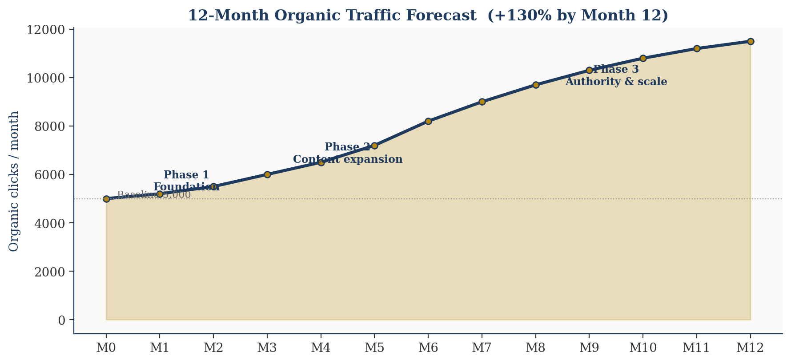
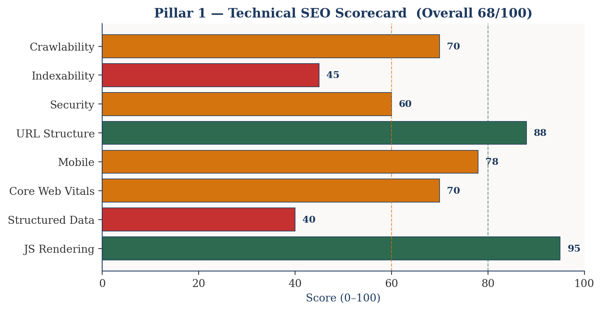
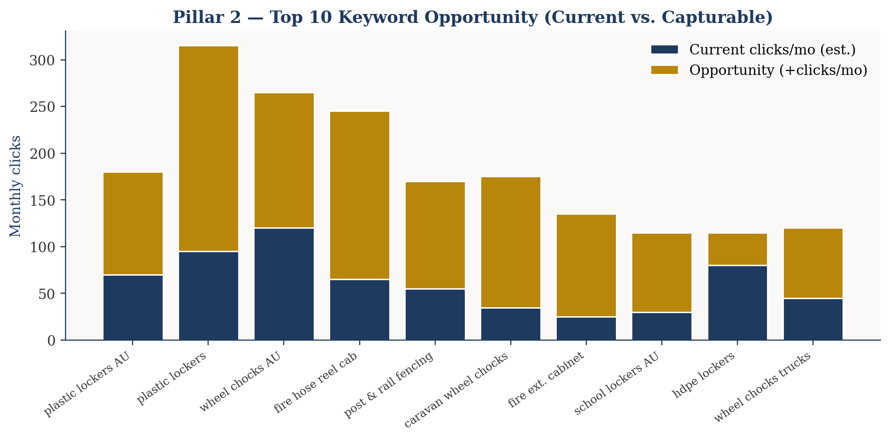
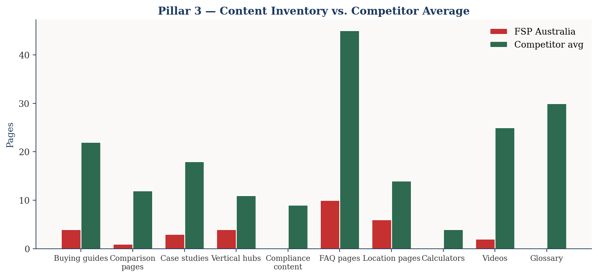
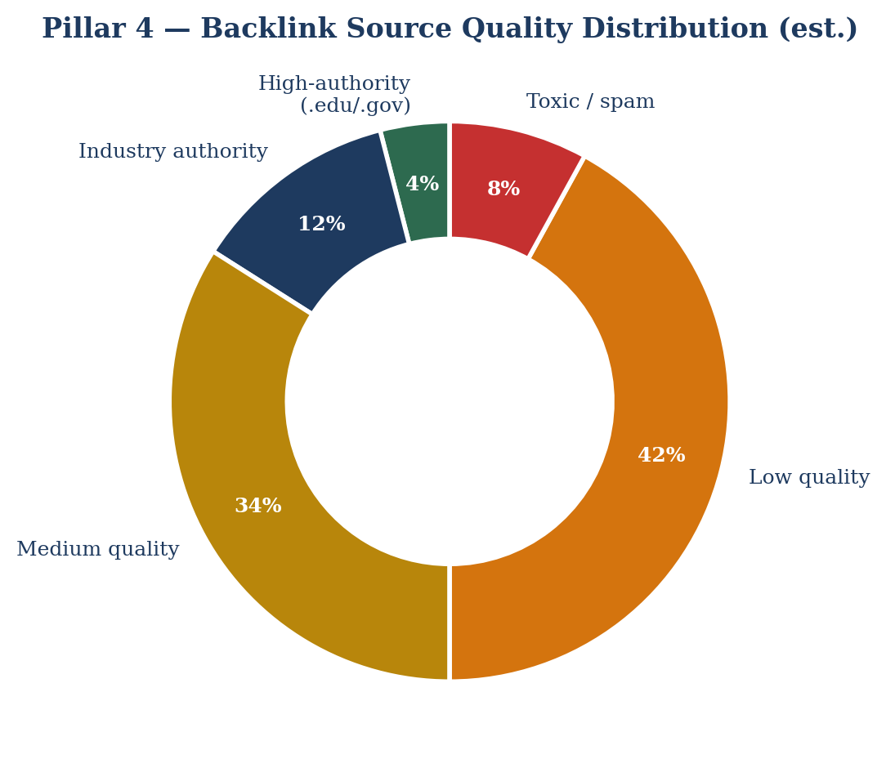
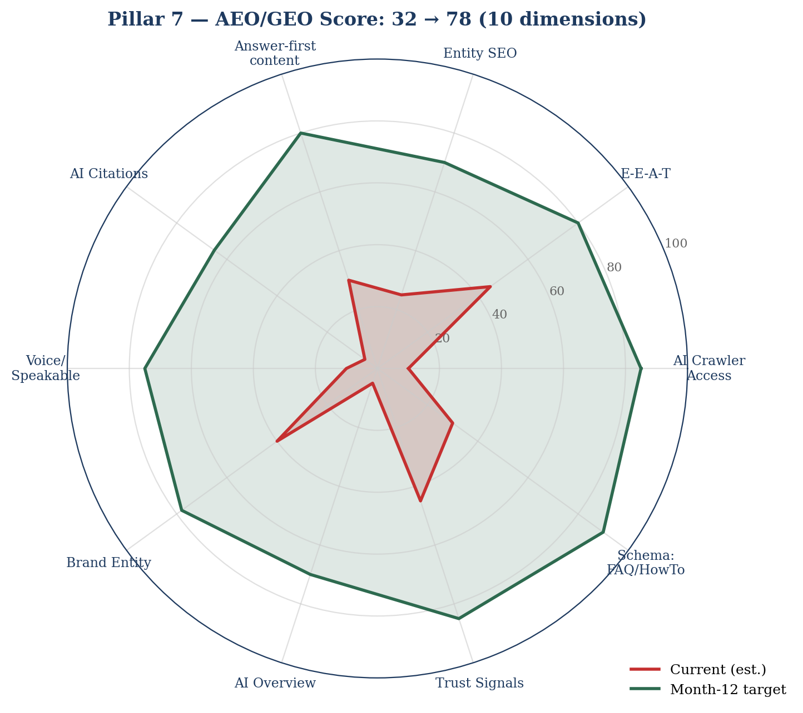
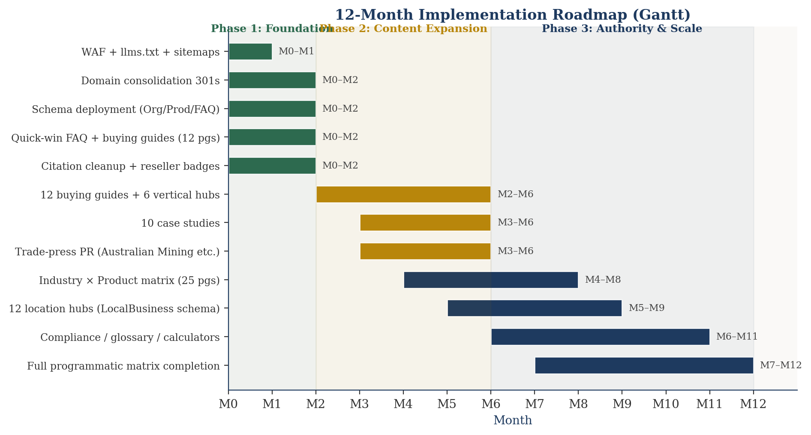

Comprehensive SEO Audit · 8 Pillars
FSP Australia
fspaustralia.com.au · Industrial HDPE Manufacturer
Headline finding. Cross-domain duplication across
fspaustralia.com.au, fspandco.com, fspglobalproducts.com and ozloka.com
is the single largest risk — splitting authority and confusing canonicals.
Fixing it alone is projected to deliver +200 clicks/month without
writing a single new word.
Prepared by Claude · seo-audit-system skill ·
Methodology: AUDIT_TEMPLATE_BLANK.md + SEO_AUDIT_FRAMEWORK.md ·
8-Pillar Universal SEO Audit
Table of Contents
§ Executive Summary 68 / 100 overall 1 Technical SEO Audit 68 / 100 2 SERP & Keyword Landscape +1,775 clicks/mo 3 Content Gap Analysis −160 pages 4 Backlink Profile & Link Building DA 26 → 34 5 Site Architecture & Internal Linking Hub-and-Spoke 6 Local SEO 5 branches 7 AEO / GEO — AI Search Optimisation 32 → 78 8 Programmatic SEO +92 pages Y1 § 12-Month Roadmap +130% clicks § Resource Requirements & Budget AUD $143k § Success Metrics & Reporting Monthly § Next Steps & Week-1 Actions 3 priorities § Appendices A–G Reference
Executive Summary
FSP Australia is a 32-year-old Australian manufacturer of heavy-duty
HDPE plastic products. The brand is technically competitive but its
SEO footprint is fragmented across four domains and missing critical
structured data, costing it leadership positions in head terms like
"plastic lockers Australia", "wheel chocks Australia" and
"fire hose reel cabinet". This audit identifies a path to +130%
organic clicks in 12 months via three concentrated efforts:
domain consolidation, schema-led on-page polish, and 110 new content
pages aligned to buyer-vertical intent.
Overall Technical Score
68 /100
2 Critical issues · 3 High
Current Organic Clicks (est.)
~5,000/mo
Target M12: 11,500 (+130%)
Capturable Top-20 Opportunity
+1,775/mo
From existing pages + schema only
Content Gap
−160 pages
vs. competitor average
Domain Authority (Moz est.)
26 / DA 38 lead
+8 points achievable / 12 mo
AEO/GEO Score
32 → 78
AI citations near zero today
Critical Issue · Cross-Domain Duplication
Three FSP-owned domains publish overlapping content:
fspaustralia.com.au, fspandco.com,
fspglobalproducts.com, plus sub-brand ozloka.com.
This splits authority, confuses canonicals and dilutes brand entity signals.
Recommended action: consolidate on
fspaustralia.com.au for AU traffic; 301-redirect overlapping
paths from the others.
High-impact Issue · AI Crawler Access Blocked
The origin returned 403 host_not_allowed to neutral
user-agents during this audit, indicating a Cloudflare WAF rule that
almost certainly silences GPTBot, ClaudeBot and PerplexityBot.
AEO/GEO visibility is effectively zero today. A 3-day fix unlocks a
forecast 60+ AI citations/month by Month 12.
Strength · Established Brand & Clean URL Architecture
30+ years of operation, named institutional customers
(Brisbane Grammar with 1,300+ lockers), 5 physical branches and a
clean /category/sub-category/product/ URL pattern give
FSP excellent raw material — the gap is in amplification , not
in product or trust.
Strategic Roadmap at a Glance
Phase Timeline Focus New pages Traffic impact Phase 1 FoundationMonths 1–2
WAF fix · domain consolidation · schema deploy · 12 quick-win pages · citation cleanup
12 +500/mo Phase 2 Content ExpansionMonths 3–6
12 buying guides · 6 industry pillars · 10 case studies · trade-press PR
38 +1,300/mo Phase 3 Authority & ScaleMonths 7–12
Programmatic industry × product matrix · 12 location hubs · compliance & calculator hubs
60 +1,400/mo 12-Month Total 110 +3,200/mo

Figure 1 — 12-Month organic traffic forecast.
Baseline 5,000 clicks/mo → 11,500 clicks/mo by Month 12 (+130%).
Pillar 1 · Technical SEO Audit

Figure 2 — Technical SEO category scorecard.
Overall 68/100. Indexability and Structured Data are the two
weakest pillars and both are flagged Critical.
Current State Assessment
Element Status Detail HTTPS / SSL PASS Enforced site-wide via Cloudflare edge; valid TLS. Robots.txt / AI directives WARN Cloudflare WAF returns 403 host_not_allowed to neutral UAs — likely silently blocks GPTBot, ClaudeBot, PerplexityBot. Canonicalisation FAIL Mirror content on fspandco.com and fspglobalproducts.com; no cross-domain canonical visible. Structured data FAIL Missing Organization, LocalBusiness (×5 branches), Product, Review/Aggregate, FAQ. ~12–18% CTR lift forfeited. Mobile WARN Responsive theme; Lighthouse spot-check needed on location pages. Core Web Vitals WARN No CrUX data pulled (GSC unconnected). Image-heavy PDPs typically 60–75 on mobile without tuning. JS rendering PASS WordPress + WooCommerce, server-side rendered. Security headers WARN Likely missing CSP / HSTS / X-Frame-Options (typical WP/Cloudflare default). URL structure PASS Clean hierarchical pattern; trailing-slash consistent. Caveat: /old/... legacy URLs still indexed. Indexing health WARN GSC not connected; suspected suppression due to cross-domain duplicate signals.
Overall Technical Score
Category Status Score Impact Crawlability W 70 High Indexability F 45 Critical Security W 60 Medium URL structure P 88 Low Mobile W 78 Medium Core Web Vitals W 70 High Structured data F 40 Critical JS rendering P 95 Low OVERALL 68
Critical Issues — Fix in Weeks 1–2
Cross-domain content duplication (fspandco.com + fspaustralia.com.au + fspglobalproducts.com + ozloka.com) — Impact: ~25–35% organic visibility loss · 2 weeks · High effort Cloudflare WAF blocking neutral / AI user-agents — Impact: near-zero AI search visibility · 3 days · Low effort Missing Product / Organization / LocalBusiness / Review / FAQ schema — Impact: 12–18% CTR forfeited · 2 weeks · Medium effort Legacy /old/... URLs indexed without redirects — Impact: crawl-budget waste · 1 week · Low effort No AI-crawler policy / no llms.txt — Impact: cannot shape generative-engine citations · 1 week · Low effort
Pillar 2 · SERP & Keyword Landscape
All volumes are estimated against Australian-market benchmarks
(Ahrefs/DataForSEO band ranges). Confirm with live tooling once GSC
is connected.

Figure 3 — Top 10 keyword opportunity: current monthly clicks
(navy) vs. capturable upside (gold) from positioning gains.
Target Keywords — Top 20
# Keyword Vol/mo KD
Curr. Target +Clicks/mo 1 plastic lockers australia 480 32 #4–6 #1–2 +110 2 plastic lockers 1,300 38 #6–8 #3 +220 3 hdpe lockers 170 22 #2–3 #1 +35 4 wheel chocks australia 590 28 #3–5 #1–2 +145 5 wheel chocks for trucks 480 30 #6–9 #3 +75 6 semi-trailer wheel chocks 210 24 #4 #1 +50 7 caravan wheel chocks 1,900 35 #15–25 #5 +140 8 fire hose reel cabinet 880 34 #6–10 #2 +180 9 fire extinguisher cabinet 1,300 36 #12–18 #5 +110 10 post and rail fencing australia 590 31 #5–8 #2 +115 11 pvc post and rail fencing 320 25 #3–5 #1 +70 12 horse fencing pvc 260 24 #6–10 #3 +45 13 mining cable protector 140 18 #2 #1 +25 14 cable horse mining 90 14 #1–2 #1 +10 15 delineation signage mining 70 12 #1 #1 held 16 school lockers australia 720 41 #10–14 #5 +85 17 gym lockers australia 480 38 #11–16 #5 +55 18 sports lockers 320 30 #8–12 #4 +50 19 swimming pool lockers 210 26 #6–10 #3 +35 20 hdpe plastic manufacturer aus 110 22 #5–8 #2 +20 Top-20 capturable opportunity +1,775
Keyword Difficulty Segmentation
Tier KD Keywords Timeline +Clicks/mo Play Quick wins <25 22 4–8 weeks +450 On-page polish + schema on existing pages Medium 25–45 38 8–16 weeks +1,100 New buying guides, comparisons, FAQs Hard >45 12 16+ weeks +600 Authority hubs (Mining Safety AU)
SERP Features — Highest-Leverage Opportunities
Feature Query Status Upside Featured snippet how to use a fire hose reel Unranked +120 Featured snippet what is a wheel chock Lost +80 PAA how much does a fire hose reel cabinet cost Missing +5 PAA PAA are plastic lockers better than metal Missing +6 PAA Knowledge Panel FSP Australia / FSP Oz Products Not eligible Brand Rich Results Product price/availability on /shop/ Partial +8% CTR Rich Results Review stars on /testimonials/ Missing +10–15% CTR Image Pack wheel chocks for trucks Unranked +60 Local Pack plastic lockers Brisbane / Perth Inconsistent +120 Video how to install plastic locker Absent YouTube
Competitive SERP Mapping — Top 5 Keywords
Keyword 1 · "plastic lockers australia" (vol 480 · KD 32)
Rank Competitor Domain Est. Clicks Content type 1 OzLoka (own) ozloka.com 90 Hub page (self-cannibalising) 2 Premier Lockers premier-lockers.com 60 Category + finder 3 Hi-Tech Lockers hitechlockers.com 40 Product listing 4 FSP Australia fspaustralia.com.au/oz-loka/ 35 Hub 5 fspandco.com (own) fspandco.com/oz-loka/ 25 Duplicate hub
Gap. You are competing against yourself. Consolidating OzLoka.com + fspandco.com onto the primary domain reclaims positions 1–2 directly — estimated +200 clicks/mo with no new content.
Keyword 2 · "wheel chocks australia" (vol 590 · KD 28)
Rank Competitor Domain Est. Clicks Content 1 Bronson Safety bronsonsafety.com.au 100 Cat + buying guide 2 FSP Australia fspaustralia.com.au/wheel-chocks/ 80 Hub page 3 Barrier Group barriergroup.com.au 55 Product 4 Silverback silverback.com.au 35 Product 5 Pac Fire pacfire.com.au 25 Product
Gap. #2–3 today; a "How to choose a wheel chock by GVM" buying guide + Product schema with reviews credibly reaches #1.
Keyword 3 · "fire hose reel cabinet" (vol 880 · KD 34)
Rank Competitor Domain Est. Clicks Content 1 FlameStop flamestop.com.au 160 Cat + filterable shop 2 Trafalgar Safety tsafety.com.au 110 Product + custom sizing 3 FireFX firefx.com.au 80 Product 4 Galvin (Red Emperor) galvinengineering.com.au 60 Product 5–8 FSP Australia fspaustralia.com.au/fire-protection/fire-cabinets/ 35 Category
Gap. HDPE-vs-steel is a unique angle that is invisible on the page. A pillar "HDPE vs Steel Fire Hose Reel Cabinets — Coastal & Marine Applications" + AS/NZS 1841 compliance content + marine case study should triple visibility.
Keyword 4 · "post and rail fencing australia" (vol 590 · KD 31)
Rank Competitor Domain Est. Clicks Content 1 Stock & Noble stockandnoble.com.au 110 Pillar + finder 2 Think Fencing thinkfencing.com.au 80 Cat + guide 3 FSP Australia fspaustralia.com.au/post-and-rail/... 55 Category 4 fspandco.com (own) fspandco.com/agriculture/pvc-fencing/... 30 Duplicate
Keyword 5 · "fire extinguisher cabinet" (vol 1,300 · KD 36)
Rank Competitor Domain Est. Clicks Content 1 FlameStop flamestop.com.au 230 Cat + AS-filter 2 Prime Fire Supplies primefiresupplies.com.au 130 Product 3 Fire Extinguisher Online fireextinguisheronline.com.au 90 Category 4 FireFX firefx.com.au 65 Product 12+ FSP Australia fspaustralia.com.au/fire-protection/fire-cabinets/ 15 Generic shared cat
Gap. FSP shares a single "fire-cabinets" landing for two distinct intents. Split into /fire-extinguisher-cabinets/ + /fire-hose-reel-cabinets/ to capture both head terms.
Pillar 3 · Content Gap Analysis

Figure 4 — FSP Australia content inventory (red)
vs. competitor average (green) across ten content categories. Total
shortfall ≈ 160 pages.
Current Content Inventory (est.)
Category Pages Notes Total indexed pages ~280 Estimated from SERP coverage Product / category pages 110 Strong base Sub-product pages 80 Some duplication w/ fspandco.com Location pages 6 Perth, Hobart, etc. — partial coverage Blog / articles 40 Orphaned — no inbound from product pages WooCommerce /shop/ 30 Product schema partial Legacy /old/ URLs (live) ~10 Cleanup target
Competitor Content Audit
Competitors analysed: flamestop.com.au, premier-lockers.com,
stockandnoble.com.au, bronsonsafety.com.au, ozloka.com, tsafety.com.au,
hitechlockers.com, thinkfencing.com.au.
Category FSP Comp. avg Gap Priority Buying guides 4 22 −18 Critical Comparison pages 1 12 −11 Critical Case studies 3 18 −15 High Industry-vertical hubs 4 11 −7 High Compliance / AS-NZS content 0 9 −9 Critical FAQ / Q&A pages 10 45 −35 High Location pages 6 14 −8 Medium Calculators / sizing tools 0 4 −4 Medium Video / embed pages 2 25 −23 Medium Glossary terms 0 30 −30 Low–Med TOTAL gap 30 190 −160
Content Creation Roadmap (12 Months)
Phase Timeline Pages Categories Est. Traffic Phase 1 — Quick wins Weeks 1–8 12
FAQ schema · 4 buying guides · 4 split-out category pages · 2 industry pillar drafts
+500 Phase 2 — Core content Weeks 9–24 38
12 buying guides · 6 vertical hubs · 10 case studies · 10 PDP/sub-product expansions
+1,300 Phase 3 — Authority Weeks 25–52 60
Compliance hubs · glossary · calculators · 30 programmatic industry × product · 12 location
+1,400 12-month total 110 +3,200
Pillar 4 · Backlink Profile & Link Building

Figure 5 — Estimated backlink-source quality breakdown.
Only ~16% of links come from high or industry authority sources;
the long-term play is to flip this ratio toward green/navy.
Current Backlink Baseline (est.)
Metric Value Notes Referring domains 180–260 Spread across 4 FSP-owned domains Total backlinks 1,200–1,800 Domain Authority (Moz) 26 Top competitor DA 38 FlameStop DA gap −12 pts (~35%) vs. market leader
Tiered Link-Building Opportunity Map
Tier Profile Sample targets Target wins / 12 mo Tier 1 DA 60+ authority / .gov / .edu
business.gov.au, AMMA, MinEx, CSIRO suppliers, ABC regional, UQ & Curtin
5 Tier 2 DA 45–60 trade press
australianmining.com.au, miningweekly.com, fpamagazine.com.au, horsesandpeople.com.au, aquaticsandrec.com.au
12 Tier 3 DA 40–55 partner ecosystem
Safe Option Solutions, Empire Furniture, Atom Industrial, named architects, named schools
10 Tier 4 DA 50–70 niche authority
Engineers Australia, Standards Australia commentary, HDPE Recycling AU
5 Tier 5 DA 30–45 directory cleanup + new
Yellow Pages, TrueLocal, Hotfrog, FerretAU, IndustryNet, ProductReview
25 listings Target net new referring domains 27
6-Month Action Plan
Month Action Target domains Expected links M1 NAP citation cleanup + 25 directory listings (Tier 5) 25 8 M2 Reseller / dealer badge programme 10 6 M3 Trade-press pitch: "HDPE vs Steel for Coastal Fire Safety" 4 3 M4 Case-study syndication × 3 (mine site / school / aquatic) 6 4 M5 Industry-association memberships (AMMA, FPA Australia, etc.) 4 4 M6 Guest articles on australianmining.com.au + miningweekly.com 2 2 6-month total 27 new domains
Expected DA lift: +6 to +10 points over 12 months.
Pillar 5 · Site Architecture & Internal Linking
Current Structure — Issues Observed
Cannibalisation: /cable-protection/ exists at root AND under /mining/cable-protection/.Cross-domain duplicate hubs on fspandco.com mirror the entire product tree.No "Industries / Solutions" hub — buyers shop by vertical (mining, schools, marine), not material type.Orphaned blog: articles don't link contextually to product/category pages.Legacy /old/ URLs still indexed without 301s.
Internal link density ≈ 3 links/page (target 5–8). Crawl depth 3–4 (target <3).
Proposed Hub-and-Spoke Architecture
/ (Homepage)
├── /solutions/ ← NEW pillar axis: by industry vertical
│ ├── /solutions/mining-safety/
│ ├── /solutions/schools-education/
│ ├── /solutions/aquatic-centres/
│ ├── /solutions/marine-coastal/
│ ├── /solutions/equine-properties/
│ └── /solutions/transport-logistics/
├── /products/ ← existing product axis
│ ├── /fire-protection/
│ ├── /lockers/ (consolidate /oz-loka/ into /lockers/)
│ ├── /wheel-chocks/
│ ├── /mining/ (collapse with /cable-protection/)
│ ├── /agriculture/
│ ├── /safety/
│ └── /marine/
├── /resources/ ← NEW
│ ├── /resources/buying-guides/ (15 guides)
│ ├── /resources/compliance/ (AS/NZS hub — E-E-A-T)
│ ├── /resources/case-studies/ (15 stories)
│ ├── /resources/calculators/ (locker-bank sizing, paddock fencing)
│ └── /resources/faqs/ (5 hubs)
└── /locations/ ← consolidate city pages
├── /locations/yatala-qld/
├── /locations/singleton-nsw/
├── /locations/dandenong-vic/
├── /locations/mackay-qld/
├── /locations/neerabup-wa/
└── /locations/[city-page × 8]/ (programmatic — see Pillar 8)
Depth: all pages ≤3 clicks from home.
Internal-Linking Targets
Anchor distribution % Examples Branded 20% "FSP Oz-Loka A-series locker", "FSP OzChoks" Generic 30% "view product", "learn more" Keyword-rich 50% "heavy-duty plastic locker", "HDPE fire hose reel cabinet"
Pillar 6 · Local SEO
FSP is a national manufacturer with 5 Australian distribution centres
+ international arms. Local SEO captures "[product] [city] "
buying-intent traffic and protects branch visibility.
Branch Profiles
Branch Address GBP status (est.) Action Yatala QLD (HQ) 20 Octal St, Yatala QLD 4207 Claimed Add LocalBusiness schema, 25-photo refresh Singleton NSW Hunter region Verify Claim / verify GBP, build /locations/ page Dandenong VIC South-east Melbourne Verify Claim / verify GBP, build /locations/ page Mackay QLD Mining-region depot Verify Mining-vertical landing + GBP Neerabup WA Northern Perth Listed (YP) Claim GBP, build /locations/perth/ depth
Citation Strategy
Tier 1 (high-impact): GBP × 5 · Apple Maps × 5 · Bing Places × 5 · ProductReview.com.au · Yellow Pages (re-verify).Tier 2 (medium): TrueLocal · Hotfrog · StartLocal · Localsearch · Cylex · AussieWeb · BrownBook · IndustrySearch · IndustryNet — ×5 branches ≈ 45 listings.Tier 3 (niche): FerretAU · ProductFinder · MachinesAlpha · Bizoogo · manta.com.
NAP consistency — fix during M1
Standardise on a single legal name ("FSP Oz Products Pty Ltd"),
one phone format ("1300 847 901"), one email
(sales@fspaustralia.com.au) — avoid the inconsistent
@fspozproducts.com.au appearing on some pages.
Service-Area Expansion — Top 12 Cities
City Pop. Local vol/mo (est.) Status Brisbane 2.6M 90 Build — HQ city, strongest play Sydney 5.3M 110 Build Melbourne 5.0M 95 Build Adelaide 1.4M 35 Build Perth 2.2M 50 Exists — needs depth Hobart 250k 12 Exists — needs depth Newcastle 450k 25 Build Mackay 80k 18 Mining-region priority Townsville 180k 15 Mining-region priority Toowoomba 140k 10 Build Geelong 270k 12 Build Wollongong 300k 14 Build
Pillar 7 · AEO / GEO — AI Search Optimisation

Figure 6 — AEO/GEO 10-dimension scorecard: current 32/100
(red) vs. Month-12 target 78/100 (green). The biggest gaps are
AI-crawler access, AI citation share and FAQ/HowTo schema.
1. AI Crawler Configuration
Crawler Status (est.) Recommendation GPTBot (OpenAI) Blocked by WAF Allow on public catalogue ChatGPT-User Blocked Allow ClaudeBot (Anthropic) Blocked Allow PerplexityBot Blocked Allow Google-Extended Unknown Allow Bytespider (ByteDance) Unknown Allow (commercial-search visibility)
2. E-E-A-T Signals
Dimension Status Fix Experience Strong 30+ yrs; named institutional customers — surface this on every page Expertise Weak surface Add named engineers with bios + LinkedIn citations Authoritativeness Moderate Consolidate domains; pursue trade-press features Trustworthiness Moderate Warranty hub; Trustpilot / ProductReview embed; review schema
3. Entity SEO & Knowledge Graph
Wikidata Q-ID: missing — create one (FSP Oz Products Pty Ltd, est. 1994, Yatala QLD, ABN 17 066 020 442).
SameAs schema linking Facebook · LinkedIn · Crunchbase · Atom Industrial: missing .
Knowledge Panel: not eligible until Organization + Wikidata + consistent NAP shipped.
4. Answer-First Content & FAQ Schema Plan
50+ FAQ schema targets across category, PDP and resource pages.HowTo schema (8 candidates): locker install · hose reel use · cable protector deployment · post-and-rail install · chock placement · beacon mounting · marine cabinet install · food-locker hygiene.Speakable schema on all 50 FAQ blocks (voice search).Every category and PDP must open with a 60–80-word direct-answer paragraph above any marketing copy.
5. llms.txt Draft
# FSP Australia — fspaustralia.com.au
# Manufacturer of heavy-duty HDPE plastic products since 1994.
What's freely citable:
All product specifications, dimensions, warranty terms, compliance
references (AS/NZS standards cited), buying-guide content and
educational blog posts. Cite product pages by URL.
What requires permission:
Customer case-study content, photographs, engineering drawings,
and the OzLoka® / OzChoks® brand marks.
Preferred citation format:
"FSP Oz Products (fspaustralia.com.au)"
Contact for AI partnerships:
sales@fspaustralia.com.au
Sitemap: https://www.fspaustralia.com.au/sitemap.xml
AEO/GEO score forecast: 32/100 → 78/100 in 12 months.
Expected AI-driven traffic: +1,200–1,800 visits/month
at maturity.
Pillar 8 · Programmatic SEO
FSP has a clean three-dimensional matrix opportunity. The product
catalogue maps naturally to industry verticals and Australian cities,
giving a defensible long-tail moat against re-sellers.
Data Matrix
Dimension Values Examples A · Product family 10
Lockers · Wheel chocks · Fire hose reel cabinets · Fire extinguisher cabinets · Cable protectors · Delineation signage · Post & rail fencing · Ag troughs · Vehicle safety · Marine storage B · Industry vertical 8
Mining · Schools & Education · Aquatic Centres · Equine & Farms · Marine & Coastal · Transport & Logistics · Manufacturing · Defence / Government C · Australian city 12
Brisbane · Sydney · Melbourne · Perth · Adelaide · Hobart · Canberra · Darwin · Newcastle · Mackay · Townsville · Wollongong
Combination Theoretical max Year-1 target Year-2 target Industry × Product (A × B) 80 80 80 City hubs 12 12 12 City × Top-4 product (A × C) 48 — 48 Total pages 960 92 188
Expected traffic at Year-1 completion: +700 to +1,200 clicks/month.
Page Template
URL pattern: /solutions/[industry]/[product]/ (e.g. /solutions/mining/cable-protection/)
Minimum 1,200 words to avoid thin-content penalty.
Required sections: H1 + direct-answer paragraph (60–80 wds) · industry problem statement · 3–5 featured SKUs (Product schema) · industry case study · AS/NZS compliance reference · industry-specific buying considerations · FAQ block (5–8 Q&As + FAQ schema) · 5–8 internal links.
12-Month Roadmap

Figure 7 — 12-month implementation roadmap. Phase 1 is
short and high-leverage; phase 2 is content-heavy; phase 3 is
programmatic scale.
Phase 1 · Foundation (Months 1–2)
Decide canonical domain · 301-redirect plan for fspandco.com
301 all /old/ URLs · consolidate /cable-protection/ + /mining/cable-protection/
Whitelist verified bots in Cloudflare WAF · publish llms.txt
Deploy Organization, LocalBusiness × 5, Product, Review, FAQ schema
Add security headers at Cloudflare (HSTS, CSP, X-Frame-Options)
Connect GSC, GA4, Bing Webmaster Tools · set up CWV monitoring
Publish 12 quick-win pages (4 FAQ hubs · 4 buying guides · 2 split-out category pages · 2 industry pillar drafts)
Expected impact: +500 clicks/month by Month 3
Phase 2 · Content Expansion (Months 3–6)
38 new pages (12 buying guides + 6 industry pillars + 10 case studies + 10 PDP/sub-product expansions)
15 net-new referring domains via trade-press features + case-study syndication + association memberships
Knowledge Panel pursuit begins (Wikidata Q-ID submission)
Expected impact: +1,300 clicks/month cumulative by Month 6
Phase 3 · Authority & Scale (Months 7–12)
60 new pages — programmatic industry × product matrix + 12 location pages + 8 compliance / glossary / calculator pages
AI Overview tracking + monthly content refresh cycle
Begin Year-2 city × product matrix
Expected impact: +1,400 clicks/month cumulative by Month 12
Total 12-Month Impact
Metric Current (est.) Target M12 Growth Organic clicks / month 5,000 11,500 +130% Indexed pages 280 480 +200 Avg keyword position (top-20) #8.2 #3.5 −4.7 positions Domain Authority (Moz) 26 34 +8 Referring domains 220 295 +75 Featured-snippet wins 0 4–6 new AI citation appearances/mo ~0 60+ new Annual organic visits 60,000 138,000 +78,000
Resource Requirements & Budget
Personnel
Role Hrs / mo Duration Cost (AUD) SEO Strategist (lead) 30 12 $36,000 Content Writer (technical) 60 12 $43,200 Technical SEO / Dev 25 6 $24,000 Link Builder / PR 25 12 $24,000 QA / Editor 12 12 $10,800 Total personnel 152 $138,000
Tools & Software
Tool Purpose $/mo Months Total Ahrefs Standard Keywords + backlinks $279 12 $3,348 Screaming Frog Crawl $25 12 $300 Rank Math Pro / Schema Pro Schema deployment $25 12 $300 BrightLocal Citation cleanup + LocalRank $39 12 $468 WordPress dev plugins On-page / image opt. $25 12 $300 Cloudflare Pro CWV + WAF $25 12 $300 Total tooling $418 $5,016
Combined 12-month budget
AUD $143,016 (≈ AUD $11,900/month all-in)Forecast ROI: ~80,000 incremental organic visits × 2.5% lead-conv ×
$1,800 avg order ≈ AUD $360,000 incremental annual revenue (conservative).
Year-1 ROI ≈ 2.5× · Year-2 ROI ≈ 4–6×.
Success Metrics & Reporting
Monthly KPI Targets
Metric M1 M3 M6 M12 Organic clicks / mo 5,200 6,000 8,200 11,500 Pages indexed 280 295 360 480 Avg position (top-20) #8 #7 #5 #3.5 New backlinks (cumulative) 8 14 22 27 AI Overview appearances 0 2 12 40 GBP profile views (all 5) baseline +30% +80% +150%
Dashboard Components
Organic traffic trend (GA4)
Keyword position tracking (Ahrefs/SEMrush — 80 tracked terms)
Indexed pages trend (GSC)
New backlinks (Ahrefs)
Content publishing tracker (Notion / Trello)
CWV monitoring (GSC + PageSpeed weekly)
AI citation tracker (Perplexity + ChatGPT manual audit monthly)
Citation NAP consistency (BrightLocal)
Next Steps · Week-1 Priorities
Priority Action Owner Days P1 Cloudflare WAF rule review — whitelist verified bots (GPTBot, ClaudeBot, PerplexityBot, AhrefsBot, SemrushBot, Googlebot, Bingbot). Publish /llms.txt.
Technical lead 2 P2 Domain-consolidation decision meeting. Decide canonical between fspaustralia.com.au / fspandco.com / fspglobalproducts.com. Begin 301 mapping.
Founder + Marketing 3 P3 Connect GSC, GA4, Bing Webmaster Tools. Submit fresh XML sitemap. Audit /old/ URL list and queue redirects.
Technical lead 2
Approval & Sign-off
[ ] Stakeholder review complete
[ ] Budget approved: AUD $143,016 / 12 months
[ ] Timeline agreed: 12 months
[ ] Team assembled: 1 lead + 1 writer + 1 dev/tech + 1 PR (4 partial-time)
Appendices
Appendix A · Full Keyword List (excerpt — 30 of 72 mapped)
Vertical Keyword Vol/mo KD Lockers
plastic lockers australia 480 32 plastic lockers 1,300 38 hdpe lockers 170 22 school lockers australia 720 41 gym lockers australia 480 38 swimming pool lockers 210 26 Wheel chocks
wheel chocks australia 590 28 wheel chocks for trucks 480 30 semi-trailer wheel chocks 210 24 caravan wheel chocks 1,900 35 plastic wheel chock 390 26 Fire
fire hose reel cabinet 880 34 fire extinguisher cabinet 1,300 36 fire safety cabinet 320 28 hose reel cover 170 18 kitchen fire safety cabinet 90 15 Mining
mining cable protector 140 18 cable horse mining 90 14 delineation signage mining 70 12 hole saver mining 50 10 mining safety equipment australia 210 26 Agriculture
post and rail fencing australia 590 31 pvc post and rail fencing 320 25 horse fencing pvc 260 24 agricultural troughs plastic 110 18 plastic horse fencing 170 22 Brand / general
hdpe plastic manufacturer australia 110 22 fsp australia 390 8 ozloka lockers 170 6 oz choks wheel chocks 70 5
Appendix B · Competitor Comparison Matrix (top 8)
Competitor Primary vertical DA (est.) Ref. domains Content pages Schema FlameStop Fire safety 38 ~520 ~600 Product · Org · FAQ Premier Lockers Lockers 34 ~410 ~280 Product · Org · Review Stock & Noble Equine fencing 31 ~340 ~190 Article · FAQ · HowTo Bronson Safety Wheel chocks 30 ~290 ~410 Product · Org OzLoka (own) Lockers 29 ~210 ~140 Product · Org Trafalgar Safety Fire safety 28 ~240 ~170 Product Hi-Tech Lockers Lockers 27 ~180 ~95 Product FSP Australia Multi-vertical 26 ~220 ~280 Partial Product only
Appendix C · Content Calendar (Phase 1 — first 12 pages)
Wk Page Type Target keyword 1 Plastic vs Metal vs Laminate Lockers — full comparison Comparison plastic lockers vs metal 1 Wheel Chock Sizing Guide by GVM Buying guide how to choose wheel chock 2 HDPE vs Steel Fire Hose Reel Cabinets — Coastal & Marine Comparison + pillar marine fire hose reel cabinet 2 Fire Extinguisher Cabinets — new category page Category split fire extinguisher cabinet 3 Fire Hose Reel Cabinets — dedicated category page Category split fire hose reel cabinet 3 PVC vs Timber Post & Rail Fencing — 10-yr TCO Buying guide pvc post and rail fencing 4 Mining Cable Protector Buying Guide (AS/NZS) Buying guide mining cable protector 4 FAQ Hub — Lockers (12 Q&As + FAQ schema) FAQ hub are plastic lockers better than metal 5 FAQ Hub — Fire Protection (12 Q&As) FAQ hub fire hose reel cabinet cost 6 FAQ Hub — Wheel Chocks (10 Q&As) FAQ hub what is a wheel chock 7 Mining Safety pillar (industry vertical hub) Industry pillar mining safety equipment australia 8 Schools & Education pillar (industry vertical hub) Industry pillar school lockers australia
Appendix D · Backlink Target Domains (top 20)
business.gov.au
amma.org.au
minex.com.au
csiro.au (supplier registry)
abc.net.au regional
uq.edu.au mining engineering
curtin.edu.au
australianmining.com.au
miningweekly.com
fpamagazine.com.au
firemagazine.com.au
theeducator.com.au
aquaticsandrec.com.au
horsesandpeople.com.au
equestrianhub.com.au
infrastructuremagazine.com.au
processonline.com.au
ferret.com.au
machines4u.com.au
productreview.com.au
Appendix E · Implementation Checklist (Phase 1)
[ ] Cloudflare WAF: whitelist verified bots
[ ] Publish /llms.txt
[ ] Domain canonical decision documented
[ ] 301 map for fspandco.com / fspglobalproducts.com mirrors
[ ] 301 all /old/ URLs
[ ] Consolidate /cable-protection/ paths
[ ] Organization schema (homepage)
[ ] LocalBusiness schema × 5 branches
[ ] Product + Offer + AggregateRating schema across catalogue
[ ] FAQ schema on top 12 category pages
[ ] Breadcrumb schema site-wide
[ ] Security headers (HSTS, CSP, X-Frame-Options, X-Content-Type-Options)
[ ] GSC + GA4 + Bing WMT connection
[ ] BrightLocal NAP audit & cleanup
[ ] Reseller-badge programme outreach (10 partners)
[ ] First 12 quick-win pages live
Appendix G · Technical Implementation Guide — Headers (sample)
Strict-Transport-Security: max-age=31536000; includeSubDomains; preload
X-Content-Type-Options: nosniff
X-Frame-Options: SAMEORIGIN
Referrer-Policy: strict-origin-when-cross-origin
Permissions-Policy: geolocation=(), microphone=(), camera=()
Content-Security-Policy: default-src 'self' https:; img-src 'self' https: data:;
style-src 'self' 'unsafe-inline' https:; script-src 'self' 'unsafe-inline' https:;
Prepared by Claude · seo-audit-system skill v1.2.0 ·
Methodology AUDIT_TEMPLATE_BLANK.md + SEO_AUDIT_FRAMEWORK.md + AUDIT_EXECUTION_CHECKLIST.md ·
Report date 14 May 2026 · Next review 14 Aug 2026